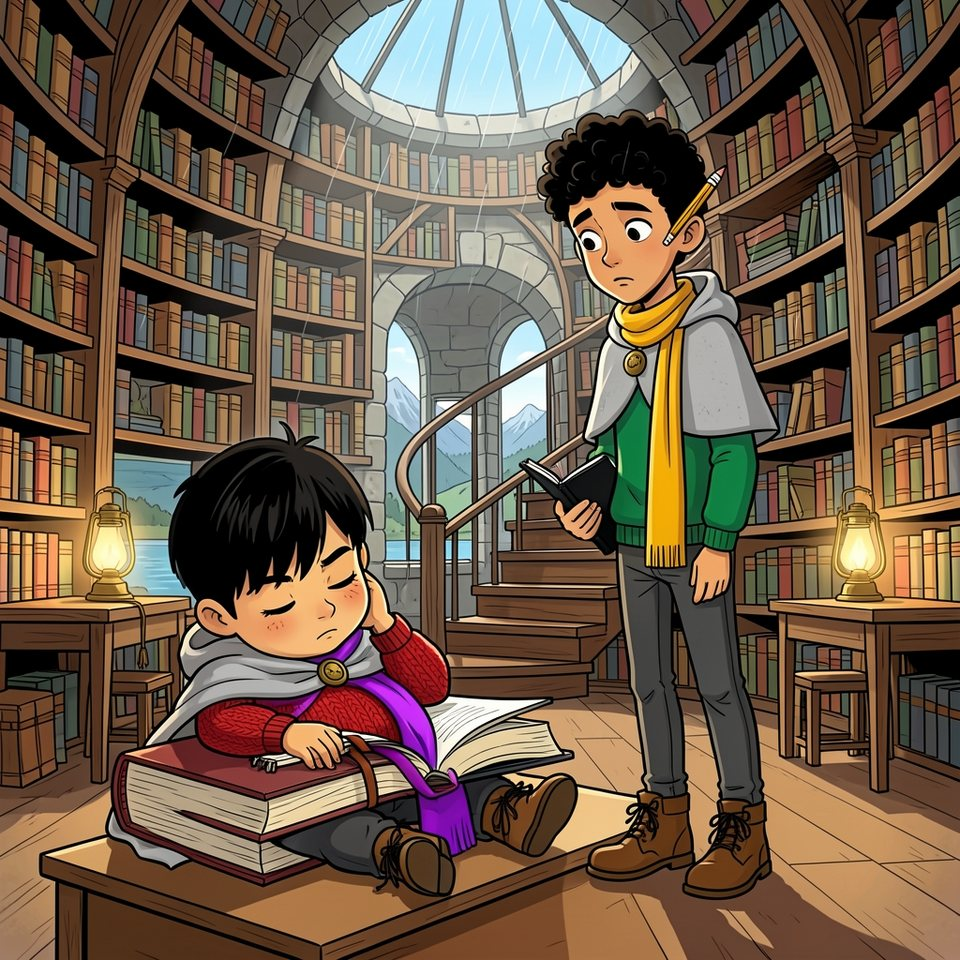

Titistoire › Les Galaxies (8-10 ans)
Le livre sans titre
Haute-Lanterne, épisode 4 sur 8 : un feuilleton à énigmes dans un vieux château-phare au milieu d'un lac.

▶ Écouter et regarder l'histoire
Gratuit, sans inscription : la voix lit, le texte suit mot à mot, les images tournent comme dans un album.
Le texte de l'histoire
Le vingt-deux au matin, Zora trouva sept trous dans la pelouse. Elle les regarda longtemps, sous son grand chapeau. Puis elle alla chercher sept pincées de graines, et n'en souffla mot à personne. Les six de la carte, eux, savaient désormais que l'horloge de personne donnait l'heure de la Grande Lanterne, et que la Grande Lanterne s'éteindrait dans dix nuits.
Restait à apprendre comment on la rallume. Le deuxième signe de la carte était un livre fermé par deux sangles. On monta donc à la bibliothèque, au cœur de la tour : les Levants d'abord, les Couchants ensuite, et Nour entre les deux, comme d'habitude. Il pleuvait sur la verrière ronde, à petit bruit.
À Haute-Lanterne, chaque livre était fermé par une sangle qu'aucune main ne pouvait défaire. Il fallait chuchoter au livre son titre. Pas le dire : le chuchoter. Elias se pencha sur un gros volume et annonça, de sa voix de chef : « Traité des brouillards ! » La sangle se resserra, avec un petit claquement sec.
« Les livres n'aiment pas les ordres », expliqua Sami. Il posa la joue sur le volume, comme sur un oreiller, et murmura le titre sans presque remuer les lèvres. La sangle tomba. « Tadam. Je ne parle jamais plus fort. C'est moins fatigant. » Sami était, de très loin, le meilleur lecteur de l'école. Cela ne se savait pas.
Encore fallait-il trouver le bon livre. Tom parcourut les rayons, le doigt sur les dos. Une sangle. Une sangle. Une sangle. Maya grimpa l'escalier tournant pour regarder d'en haut. Kenza interrogea les étagères du regard, sévèrement, comme si l'une d'elles allait avouer. À la cloche de midi, on en était à mille deux cents livres, et à zéro.
Ce fut Nour qui le trouva, parce qu'elle regardait où l'on ne regarde pas. Tous les pupitres de la bibliothèque boitaient, comme il sied à de vieux pupitres. Tous, sauf un. Sous son pied le plus court, quelqu'un avait glissé un livre, il y avait très longtemps. « Pardon, dit-elle au pupitre. Je vous l'emprunte un instant. »
C'était un gros livre de cuir bleu nuit, aplati par trois cents ans de pupitre. Il avait deux sangles, une de chaque côté, et deux petites boucles de cuivre. Sur son dos, là où les autres portent leur titre, il n'y avait rien. « Comment chuchoter un titre qui n'est écrit nulle part ? demanda Tom. — On essaie », décida Elias.
Il s'accroupit et souffla, aussi bas qu'un chef peut souffler : « Le livre de Dame Mira. » La sangle de gauche frémit, se détendit d'un doigt, puis se ravisa. Kenza s'agenouilla de l'autre côté. « Le livre de Maître Tarek. » La sangle de droite frémit à son tour, et se referma de même. Le livre ne s'ouvrit pour personne.
« Il a bougé pour nous ! — Il a bougé pour nous. — C'est le livre de Dame Mira : elle dessinait. — C'est celui de Maître Tarek : on y apprend à allumer une lanterne. » Les voix montèrent. Elias lança « Règle numéro un » plus fort qu'il n'aurait fallu, et Kenza « depuis trois cents ans » plus fort encore. Clac. Clac. Les deux sangles se serrèrent ensemble.
« On ne crie pas sur un livre », fit une voix tranquille. Miss Ada rangeait un atlas, un pinceau derrière l'oreille. « On ne crie sur personne, du reste. Mais les livres boudent plus longtemps. Celui-ci en a jusqu'à demain. » Elle s'éloigna sans demander ce que six élèves faisaient à genoux autour d'un pied de pupitre.
Le livre bouda jusqu'au lendemain. On le remit sous le pupitre, pour ne pas inquiéter le pupitre. Ce soir-là, on prit le thé sans se parler d'une aile à l'autre. La pendule dorée sonna quand même. Elle sonnait le thé par tous les temps, et par toutes les humeurs.
Nour tournait sa cuillère en silence. Elle avait vu quelque chose, et se demandait s'il était poli de le dire. Le lendemain matin, devant le livre, elle se décida. « Pardon. Hier, quand Elias a parlé, c'est la sangle de gauche qui a bougé. Quand Kenza a parlé, celle de droite. Jamais les deux. »
Kenza examina les boucles. Sur celle de gauche, on avait gravé une plume. Sur celle de droite, une petite lanterne. « Deux sangles. Deux boucles. Ce livre n'est ni à elle ni à lui. Ils l'ont fait à deux. » Cela lui coûta de le dire. Elle le dit quand même, parce que c'était vrai, et qu'elle était Kenza.
« Alors il faut les deux noms, comprit Tom. En même temps. Comme pour les parchemins. » Elias et Kenza se penchèrent, chacun de son côté. « Dame Mira », souffla Elias. « … Tarek », acheva Kenza, une seconde trop tard. Rien. « Tu es en retard. — Tu es en avance. Le Levant est toujours en avance. — Le Couchant traîne. »
« Je compte, soupira Tom. Un. Deux. Trois. » Les deux noms partirent ensemble, cette fois : deux chuchotements pour un seul souffle. Les sangles se détendirent, lentement, jusqu'à pendre à moitié. Six têtes se penchèrent. Les sangles s'arrêtèrent là. À moitié. Le livre, visiblement, attendait encore quelque chose.
Maya se gratta la tête. Des livres, elle n'en avait pas ouvert beaucoup. Mais des titres, elle en avait inventé des centaines. « Un titre, ça ne se coupe pas en deux. Imagine un livre qui s'appelle La Soupe et le Thé. Si tu dis La Soupe, et moi Le Thé, personne n'a dit le titre. Il faut que chacun le dise en entier. »
Il y eut un silence. En entier, cela voulait dire les deux noms dans chaque bouche. Or, depuis toujours, pas un Levant n'avait prononcé le nom de Maître Tarek, et pas un Couchant celui de Dame Mira. « Je préférerais manger le livre, déclara Kenza. — Moi aussi », avoua Elias. C'était leur premier accord.
Tom ne leur laissa pas le temps de changer d'avis. « À trois. Un. Deux… — Attends, coupa Elias. Dans quel ordre ? — Le vôtre d'abord, répondit Kenza. Par politesse. » Tous la regardèrent. Elle rougit jusqu'à la tresse. « C'est Nour qui déteint. — Je vous remercie, dit Nour. — Trois ! »
« Dame Mira et Maître Tarek. » Elias s'étrangla un peu sur le second nom. Kenza prononça le premier plus bas qu'un soupir. Mais ils les dirent, tous les deux, en entier et en même temps. Les sangles tombèrent sans bruit, comme deux rubans. Et le gros livre bleu, qui calait un pupitre depuis trois siècles, s'ouvrit tout seul.
Il n'y avait pas un mot dedans. Seulement des dessins à l'encre vive, et ces dessins bougeaient. Sur la première page, deux personnages pas plus hauts qu'un pouce bâtissaient une tour, pierre après pierre. L'un avait une plume derrière l'oreille. L'autre portait une lanterne. Ils se passaient les pierres en riant.
« Ils étaient amis », murmura Maya. Personne ne soutint le contraire. Le petit personnage à la plume fit un signe de la main vers le bord de la page ; puis, comme l'encre vive ne quitte jamais sa feuille, il retourna à ses pierres.
Tom tourna la page. On y voyait la chambre aux deux fenêtres, celle de la carte. Sur la table, une lanterne minuscule, à deux anses. Les deux amis la tenaient, chacun par une anse. Dans la fenêtre du couchant, un soleil descendait. Quand son dernier rayon touchait la table, les deux petites bouches s'ouvraient ensemble, et une flamme naissait.
« À deux voix, souffla Kenza. Comme le titre. » Page suivante : la même chambre, la même lanterne, et rien qu'une rangée d'étoiles qui passaient lentement, d'un bord à l'autre de la feuille. « C'est la nuit, comprit Tom. Toute la nuit. La flamme ne doit pas s'éteindre. »
Page suivante : dans la fenêtre du levant, un soleil montait. Son premier rayon touchait la lanterne, et la flamme, qui avait tenu, devenait deux fois plus haute. Ensuite, les deux amis portaient la petite lanterne en haut d'un escalier tournant, jusqu'à une lanterne énorme. Et la grande s'allumait à la petite, comme une bougie à une autre.
« Voilà comment on allume la Grande Lanterne, résuma Elias, qui aimait les règlements. Un : la petite lanterne, dans la chambre. Deux : deux voix, au dernier rayon du couchant. Trois : qu'elle brûle jusqu'au premier rayon du levant. Quatre : on la monte. — Tu as compté un, deux, trois, quatre, remarqua Tom, stupéfait. — C'est exceptionnel », reconnut Elias.
Il restait deux pages. Sur la première, les deux amis étaient assis à leur table, une lanterne allumée entre eux. L'un des deux parlait ; l'encre avait pâli, on ne voyait plus lequel. Et la petite flamme s'éteignait. Sur la dernière, chacun se tenait à un bord de la feuille, le dos tourné. Ils ne bâtissaient plus rien. Kenza referma le livre très doucement.
Une lanterne qui s'éteint pendant qu'on parle : à Haute-Lanterne, chacun sait ce que cela veut dire. Mais lequel des deux parlait ? Elias regarda Kenza. Kenza regarda Elias. Ni l'un ni l'autre ne posa la question tout haut. Pas ce jour-là.
On remit le livre sous le pupitre : en trois cents ans, nul n'était venu l'y chercher. Restait à trouver la chambre. Sur la carte, elle était dans la tour, entre les deux ailes. Or Tom avait compté toutes les portes de la tour, et aucune ne menait là. « Le troisième signe, rappela-t-il. Une porte, entre deux portes toutes pareilles. »
« Des portes pareilles, il y en a partout, bougonna Elias. — Non. Ici, pas deux portes ne se ressemblent. Je les ai toutes mesurées. Celle du Perchoir est ronde du haut. Celle de la Tanière ferme mal. » Tom chercha tout le jour deux portes exactement pareilles. Il lui semblait bien en avoir vu. Mais où ?
Ce soir-là, au Perchoir, la vérité du soir d'Elias fut : « J'ai dit son nom. Il est plus court que je ne croyais. » À la Tanière, celle de Kenza : « J'ai dit le sien. Je ne recommencerai pas. » Sa lanterne hésita, pâlit, faillit s'éteindre. Kenza soupira. « Bon. Je recommencerai peut-être. » La flamme remonta.
Sami s'endormit en chuchotant des titres, par habitude. Nour, elle, revoyait la petite flamme qui s'éteignait, dans le livre. Il lui semblait qu'on lui avait appris quelque chose là-dessus, un matin de brouillard. Elle s'endormit avant de retrouver quoi.
Tom, là-haut, ne trouvait pas le sommeil. « Quatre-vingt-dix-sept horloges, confia-t-il à sa lanterne, quatre mille deux cent dix-sept livres, et deux portes pareilles que je n'arrive pas à retrouver. » La lanterne s'alluma : tout était vrai, surtout la fin.
Une porte, entre deux portes toutes pareilles. Où donc, à Haute-Lanterne, deux portes se ressemblent-elles assez pour qu'on ait oublié de regarder entre elles ? Sur la verrière, la pluie s'arrêta. Dans la salle des Horloges, l'horloge de personne avança d'un cran, et tout en haut de la tour la Grande Lanterne cligna. Il en restait huit.
Épisode suivant : Deux jours impairs